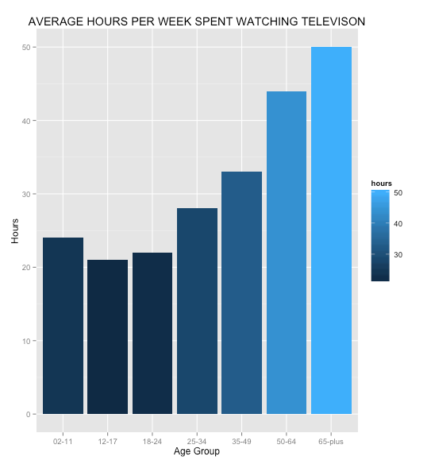

It's the pits. The cat's in the cradle with a silver spoon, the little man hated the century, and space just wasn't all it was cracked up to be. The air conditions changed, and the watches marched into the zoom room and it was really all over from there.
| Age | Hours per week | Daily average |
|---|---|---|
| 2 - 11 | 24 | 3.4 |
| 12 - 17 | 21 | 3 |
| 18 - 24 | 22 | 3.1 |
| 25 - 34 | 28 | 4 |
| 35 - 49 | 33 | 4.7 |
| 50 - 64 | 44 | 6.3 |
| 65 + | 50 | 7.1 |
Graphical representaiton below.
